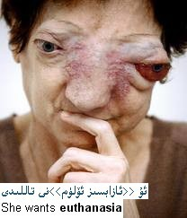

ئالدىنقى يازما
ئالدىنقى يازما كېيىنكى يازما
كېيىنكى يازما
« خاتىرجەم ئۆلۈش » مەسىلىسى [دۇنيادىكى مەشھۇر ۋەقەلەر]
ئاپتور:Birzat ۋاقتى:2010-06-11


خاتىرجەم ئۆلۈش(Euthanasia ، 安乐死) دىگەن بۇ ئاتالغۇ قۇتقۇزۇش مۇمكىن بولمىغان بىمارلارنى داۋالاش ياكى دورا ئىشلىتىشنى توختىتىپ بىمارلارنى ئازاپسىز ھالدا بۇ دۇنيا بىلەن خوشلاشتۇرۇشنى كۆرسىتىدۇ . يەنى داۋالاش مۇمكىن بولمىغان ئېغىر دەرىجىدىكى روھى كىسەللەر ، ئېغىر دەرىجىدىكى پالەچ ۋە ھۇشىغا كىلەلمەيدىغان ئۈسۈملۈك ئادەم قاتارلىق ئازاپ ئىچىدە ياشاۋاتقان بىمارلارنى ئازاپسىز ھالدا بۇ دۇنيا بىلەن خوشلاشتۇرۇشنى كۆرسىتىدۇ .شۇڭا خاتىرجەم ئۆلۈش يەنە ئازاپسىز ئۆلۈم دەپمۇ ئاتىلىدۇ .
ھەر قايسى دۆلەتلەردە ئازاپسىز ئۆلۈمنىڭ قانونىيلىق مەسلىسىگە قارىتا ھازىرغىچە دەتالاش بولماقتا. ئازاپسىز ئۆلۈمنى قوللىغۇچىلار ئازاپسىز ئۆلۈم ئۈچۈن چۇقۇم تۇۋەندىكى شەرتلەرنى ھازىرلانغان بولۇش كېرەك دەپ قارايدۇ .
1 .بىمار ھازىرقى زامان تىببى پەن تېخنىكىسى بويىچە داۋاسىز كېسەلگە گىرىپتار بۇلۇپ قالغان بولسا شۇنداقلا ھاياتىنىڭ ئاخىرقى باسقۇچىغا بېرىپ قالغان بولسا;
2 . بىمار چىدىغۇسىز كېسەل ئازابىغا دۇچار بولغان بولسا;
3 . ئازاپسىز ئۆلۈم چۇقۇم بىمارنىڭ ئۇرۇق – تۇغقانلېرىنىڭ ، دۆلەتنىڭ ياكى جەمىيەت مەنپەئەتى ئۈچۈن ئەمەس بەلكى بىمارنىڭ ئۆلۈشتىن بۇرۇنقى ئازابىنى يەڭگىللىتىشنى مەقسەت قىلغان بولۇشى كېرەك .
4 . چۇقۇم بىمارنىڭ كاللىسى سەگەك ۋاقتىدا ئەستايىدىل چۈشەندۈرۈش ھەمدە بىمارنىڭ ماقۇللۇقىنى ئېلىش كېرەك .
5 . قائىدە بويىچە چۇقۇم تېببى خادىملار ئىجرا قېلىش كېرەك .
6 . چۇقۇم جەمىيەت ئىتراپ قىلغان ئۇسۇل بىلەن ئىجرا قىلىنىشى كېرەك .

ياپونىيە ، شىۋىتسارىيە قاتارلىق دۆلەتلەر ۋە ئامېرىكا قوشما شىتاتلېرىنىڭ قىسمەن شىتاتلېرى ئاللىبۇرۇن خاتىرجەم ئۆلۈش قانون – نىزامنامىسىنى ئېلان قىلىپ بولدى .1976 – يىلى توكيودا تۇنجى قىتىملىق خاتىرجەم ئۆلۈش مەسلىسى توغرىلىق خەلقئارالىق يېغىن ئېچىلدى . خاتىرجەم ئۆلۈش مەسلىسى بىر قەدەر مۇرەككەپ شۇنداقلا ئەخلاق ، ئىنسانپەرۋەرلىك ، قانون ، تېببى ساھە قاتارلىق كۆپ ساھەگە چىتىلىدىغانلىقى ئۈچۈن دۆلىتىمىزدە تېخى مۇكەممەل قانون تۈزۈم ئورنىتىلمىدى .
بۇلتۇر 11 – ئايدا ئامېرىكا ۋاشىنگىتون شىتاتى %60 سايلىغۇچىنىڭ قۇشۇلىشى بىلەن خاتىرجەم ئۆلۈش مەسلىسىنى قانونلاشتۇرۇپ ئورىگون شىتاتىدىن كېيىنكى خاتىرجەم ئۆلۈشنى قانونلاشتۇرغۇچى ئىككىنچى شىتات بولدى ھەم بۇ قانون بۇ يىل 5 – مارتتىن باشلاپ يولغا قۇيۇلدى . بەلگىلىمە بويىچە داۋاسىز كېسەلگە گىرىپتار بۇلۇپ قالغان بىمار يېرىم يىل ئۆمرى قالغان بولسا خاتىرجەم ئۆلۈشنى ئىلتىماس قىلسا بولىدۇ . ئىلتىماس قىلغۇچى 18 ياشقا توشقان بولىشى ، ھەركەت ئىقتىدارىغا ئىگە بولىشى شۇنداقلا چۇقۇم مەزكۇر شىتاتتىن بولۇشى كېرەك . بىمار 15 كۈن ئارلىق قالدۇرۇپ ئىككى قېتىم ئېغىزچە بىۋاستە ئىلتىماس قېلىشى ھەمدە ئىككى گۇۋاھچىنىڭ گۇۋاھلىق بېرىشى بىلەن قەغەز يۈزىدە ئىلتىماس تەييارلىشى كېرەك .ئىككى گۇۋاھچىنىڭ بىرى بىمارنىڭ ئۇرۇق – تۇغقىنى بولسا بولمايدۇ شۇنداقلا ۋارىسى ،بىمارغا مەسئول دوختۇر ياكى ئىلتىماس يوللىغۇچى تۇرۇشلۇق دوختۇرخانا بىلەن مۇناسىۋەتلىك ئادەم بولماسلىقى كېرەك . ئىجرا قىلغۇچى تېببى خادىم چۇقۇم مەزكۇر شىتاتلىق سەھىيە ئىدارىسىغا خاتىرىنىڭ كۆپەيتىلگەن نۇسخسىنى تاپشۇرۇشى كېرەك . شىتاتلىق سەھىيە ئىدارسى چۇقۇم ئەمەلى ئەھۋال بويىچە يىللىق دوكلات تەييارلىشى كېرەك دەپ بەلگىلەنگەن .
ئازاپسىز ئۆلۈمنىڭ تارىخى
خاتىرجەم ئۆلۈش نەزەرىيىسى ۋە ئەمەلىيىتى ئۇزۇن يىللىق تارىخقا ئىگە . قەدىمكى سىپارتا خەلنى ئۆز دۆلىتىنىڭ قۇدرىتىنى ساقلاپ قېلىش خەلقنىڭ ساغلاملىقىغا كاپالەتلىك قېلىش ئۈچۈن تۇغۇلىشىدىنلا مىيىپ ، كىسەل تۇغۇلغان بوۋاق بالىلارنى ئۆلتۈرۋەتكەن . ئارىستوتىل ئۆز ئەسەرلېرىدە قوللاش پوزىتسىيىسىدە بولغان .ئەپلاتون ئۆزىنىڭ 《غايىۋى دۆلەت》 دىگەن كىتابىدا ئۆزىنى ئۆلتۈرۋىلىش داۋاسىز كىسەللەرنىڭ ئازاپتىن قۇتۇلىشىنىڭ ئۇسۇلى دەپ قوللىغان . بىداگىلاس قاتارلىق پەيلاسوپ ، ئالىم ۋە سىياسەتشۇناسلارمۇ ياشانغانلار ، تېنى ئاجىزلار ۋە ئازاپسىز ئۆلۈمنى خالىغۇچىلارنىڭ ئۆلۈم يولىنى تاللىشى يوللۇق دەپ قارىغان . باشقا جەمىيەتلەردىمۇ ئازاپسىز ئۈلۈم توغرىلىق نۇرغۇن مەلوماتلار قالدۇرۇلغان . ئىشلەپچىقىرىش سەۋىيىسى تۈۋەن شارائىتتا ئازاپسىز ئۆلۈم مەسلىسى مەلوم دەرىجىدە ئىشلەپچىقىرىش ئىقتىدارىغا ئىگە بولمىغان كىشىلەرنىڭ ماددى بايلىقلارنى ئىسراپ قىلىش مەسلىسىنى ھەل قىلغان بولدى لېكىن كېيىن ئىنسانىيەت جەمئىيىتى ئىشلەپچىقىرىش كۈچلېرى تەرەققى قىلغانلىقتىن ئازاپسىز ئۆلۈم مەسلىسى كۆپ تىلغا ئېلىنمىدى بۇلۇپمۇ ھەر قايسى دىننىڭ ھۆكۈمىدە ھاياتلىق بولسا تەڭرى بىزگە ئاتا قىلغان نېسىۋە ئۆلۈممۇ ئاللاھ تەرىپىدىن ئورۇنلاشتۇرۇلغان بولىدۇ دەپ قارالغاچقا ئازاپسىز ئۆلۈم مەسلىسى كۆپ تىلغا ئېلىنمىدى .
ئازاپسىز ئۆلۈم مەسلىسىنىڭ قايتا تىلغا ئېلىنىپ تەشۋىق قىلىنىش شۇنداقلا ئىجرا قىلىنىشى 1930 – يىللېرىدىكى ناتسست گىرمانىيىسىدە يۈز بەردى .ئەمەلىيەتتە ناتسىستلار ئازاپسىز ئۆلۈم مەسلىسىنى باھانە قىلىپ ئېرقى ئايرىمىچىلىق ۋە ئېرقى يوقىتىش سىياسىتى يۈرگۈزدى .
شۇنىڭدىن كېيىن ئازاپسىز ئۆلۈم مەسلىسى كەڭ كۆلەمدە قىزغىن بەس مۇنازىرىغا سەۋەپ بولدى . تىببى ئېلىمنىڭ ئاساسچىسى بولغان ھىپپوكرات تېببى خادىملارنىڭ ۋەزىپىسى بىمارلارنى ئاغرىق ئازابىدىن قۇتۇلدۇرۇش يەنەبىر جەھەتتىن بىمارنىڭ ئۆمرىنى ئۇزارتىش دەپ قارايدۇ . بۇرۇن كېسەللەر تاماق يىيىشكە ئامالسىز قالسا ھاياتىنى ساقلاپ قېلىش تەسكە توختايتتى نەپەسلىنىش ۋە يۈرەك سۇقۇشى توختاپ قالسىلا ئۆلگەن ھىساپلىناتتى . لېكىن ھازىر تىببى ئېلىمنىڭ تەرەققى قېلىشى بىلەن ئادەم بەدىنىنىڭ مەلوم ئەزالېرى ئلغار ئۈسكىنىلەرنىڭ ياردىمى بىلەن نورمال خىزمىتىنى داۋاملاشتۇرۇپ كەلمەكتە .شۇڭلاشقا داۋاسىز كېسەللەر ساقايمىغان بولسىمۇ لېكىن بەزى بىمارلار ئاخىرغىچە كېسەل ئازابىغا بەرداشلىق بېرىشكە مەجبور بولماقتا . ئاز بولمىغان كېسىلىنىڭ ئاخىرقى باسقۇچىغا بېرىپ قالغان بىمارلار ئاغرىق ئازابىغا چىدىماي دوختۇرنىڭ ئۆز ھاياتىنى ئاياغلاشتۇرىشىنى ئۈمۈد قىلىدۇ . ئۇلارنىڭ تەلىپى قانائەتلەنمىگەندە بولسا بەزىلېرى ھەتتا ئۆزىنى ئۆلتۈرۈىۋالىدۇ .شۇڭا ئازاپسىز ئۆلۈمگە مۇناسىۋەتلىك دىلو ۋە مۇنازىرىلەر بارغانچە جىقلاپ كېتىۋاتىدۇ .
ئازاپسىز ئۆلۈمنىڭ تۈرلېرى
ئازاپسىز ئۆلۈم ئادەتتە ئىككى چوڭ تۈرگە بۆلىنىدۇ .
1 . ئاكتىپ (تەشەببۇسكار)ئۇسۇل . بۇ خىل ئۇسۇلدا بىمارنىڭ ئۆلىمىنى تىزلەشتۈرۈپ بىمارنىڭ تىزراق ئازاپتىن قۇتۇلۇشنى مەقسەت قىلىدۇ .
2 . پاسسىپ ئۇسۇل . بۇ خىل ئۇسۇل ئۇسۇلدا كىسەللىك ئەھۋالى ئېغىر بولغان بىمارغا ھىچقانداق داۋالاش ئېلىپ بارماي ئۇلارنىڭ تەبىئى ئۆلىىشىنى كۈتۈشنى كۆرسىتىدۇ .
تېببى ئەخلاق ۋە قانون جەھەتتىن ئېلىپ ئېيتقاندا پاسسىپ ئۇسۇل بويىچە ئېلىپ بېرىلغان ئازاپسىز ئۆلۈم تەبىئى ئۆلۈمگە يېقىن ، ئاكتىپ ئۇسۇل بىلەن ئېلىپ بېرىلغان ئازاپسىز ئۆلۈم بولسا قەستەن ئادەم ئۆلتۈرگەن بىلەن ئوخشايدۇ .
ئازاپسىز ئۆلۈمنى قانونلاشتۇرۇش ھەركەتلېرى
1935 – يىلى ئەنگىلىيەدە تۇنجى بۇلۇپ ئازاپسىز ئۆلۈمنى قانونلاشتۇرۇش كومىتىتى قۇرۇلغان . 3 يىلدىن كېىيىن ئامېرىكىدىمۇ ئوخشاش كومىتىت قۇرۇلغان . 1976 – يىلدىن كېيىن فىرانسىيە ، دانىيە ، نورۋىگىيە ، شىۋىتسىيە ، بىلگىيە، ياپونىيە ھەتتاكى كاتولىك دىنى يىلتىزى چوڭقۇر بولغان ئىتالىيە ، فىرانسىيە ، ئىسپانىيە قاتارلىق دۆلەتلەردىمۇ ئازاپسىز ئۆلۈمنى قوللىغۇچىلار جەمئىيىتى قۇرۇلغان . گەرچە غەرپتىكى نۇرغۇن دۆلەتلەر ئازاپسىز ئۆلۈمنى بىر خىل جىنايى قىلمىش دەپ قاراپ كېلىۋاتقان بولسىمۇ لېكىن ئازاپسىز ئۆلۈمنى قوللىغۇچىلار ئۆزلۈكسىز كۆپەيمەكتە . تەخمىنەن 100 مىڭ ئادەم يازغان ۋەسىيەتنامىسىدە دوختۇرغا ئەگەر ئۇلار داۋاسىز كىسەلگە گىرىپتار بۇلۇپ ھاياتى ئاخىرلىشاي دەپ قالغان بولسا سۈنئى ئۇسۇللار بىلەن ھاياتىنى ئۇزارتىشنى خالىمايدىغانلىقىنى بىلدۈرگەن . 1976 – يىلى قۇرۇلغان ياپونىيە ئازاپسىز ئۆلۈمنى قوللاش جەمئىيىتى قۇرۇلغان ئۈچ يىلدىن كېيىن 2000 ئادەم ئەزا بولغان .
ئازاپسىز ئۆلۈم مەسلىسى جوڭگودا
1988– يىلى 5 – ئىيون جوڭگو تىببى ئىلىم جەمئىيىتى ، جوڭگو تەبىئى دىئالىكتىكا ئىلمى جەمئىيىتى ، جوڭگو جەمئىيەتشۇناسلىق ئىنىستىتۇتى پەلسەپە تەتقىقات ئورنى ، جوڭگو قانونشۇناسلىق جەمئىيىتى ، شاڭخەي تىببى ئۇنىۋېرسىتىتى ۋە باشقا مۇناسىۋەتلىك ئورۇنلار ئازاپسىز ئۆلۈم مەسلىسى توغرىلىق بىرلەشمە يېغىن ئاچتى . يېغىندا كۆپچىلىك بىردەك جوڭگودا ئازاپسىز ئۆلۈم بۇلۇپمۇ پاسسىپ شەكىلدىكى ئازاپسىز ئۆلۈم دائىم ئۇچرايدۇ لېكىن جوڭگونىڭ ھازىر ئەھۋالىغا نىسبەتەن ئېلىپ ئېيتقاندا ئازاپسىز ئۆلۈمنى قانونلاشتۇرۇشنىڭ شەرت – شارائىتلىرى تېخى پىشىپ يىتىلمىدى .1994 – يىلدىن باشلاپ دۆلىتىمىىز خەلق قۇرۇلتىيى ھەر يىلى بىر پارچە ئازاپسىز ئۆلۈمنى قانونلاشتۇرۇش ئىلتىماسىنى تاپشۇرۋالماقتا .
يېقىندا گوللاندىيە تۇنجى بۇلۇپ ئازاپسىز ئۆلۈمنى قانونى جەھەتتىن ئىتراپ قىلغانلىقنى جاكارلىدى .شۇنداقتىمۇ ئازاپسىز ئۆلۈم نۇرغۇن دۆلەتلەر ئۈچۈن بىر خىل قېيىن بولغان قانونى مەسلە .
مەنبە :دەرسلىك كىتاپ ۋە ئىنتېرنېت تورى .

 يازما مەنبەسى: بېكەت ئەسىرى
يازما مەنبەسى: بېكەت ئەسىرى خەتكۈش:
خەتكۈش:  مۇناسىۋەتلىك يازمىلار:
مۇناسىۋەتلىك يازمىلار:
ئىنكاس: 1 | نەقىل: 0 | كۆرۈلگىنى: -
 قايتۇرما
قايتۇرما ]
]يا ئاللاھ! ماۋۇ ئىشى مەن تىخى نەچچە كۈننىڭ ئالدىدىلا دەرىسلىكىمدە ئوقۇغانتىم ئەمدى بۇيەردە كۆرۈۋاتىمەن دىسە ھى ھى ھى!!!
ئىنكاس يوللاش